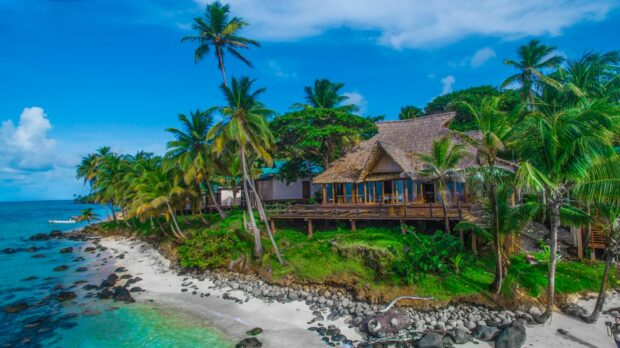
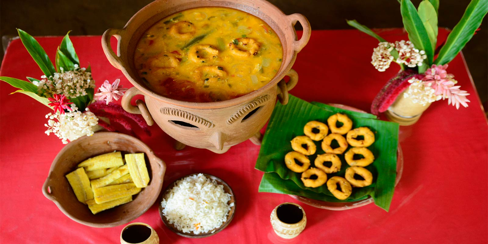
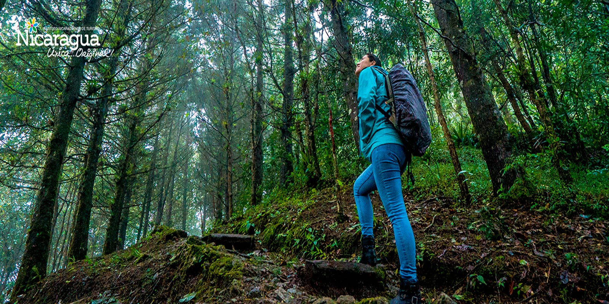

Jinotega es un departamento privilegiado por su clima fresco, bellos paisajes y atractivos turísticos naturales, además de ser de los más productivos del país, lo que lo convierte en, sin lugar a dudas, un destino ecoturístico para los amantes de la natural. ¡Jinotega es un diamante en bruto esperando que lo descubras! ¡Atrévete!
Siendo su cabecera departamental la ciudad de Boaco, popularmente conocida como la “Ciudad de Dos Pisos”. El departamento de Boaco se encuentra ubicado a 90 km de la capital. El nombre de BOACO, procede del zumo y del azteca. Está formado por dos palabras o raíces. «Boa o Boaj», que significa «encantadores», y la terminación «O», que quiere decir «lugar o pueblo», deduciéndose que el nombre de BOACO significa: «Pueblo o Lugar de Encantadores».
Conocido como El Diamante de Las Segovia, está ubicado a tan solo 150 kilómetros al norte de Managua. El vocablo Estelí, para algunos historiadores, procede de las voces mexicanas “ix” que significa “ojo” y “telli” que significa “plano, valle o campo”; es decir “Ojo sobre el valle”. .

Granada conocida como La Gran Sultana, está ubicada a tan solo 45 kilómetros al sur de Managua. Esta ciudad colonial fue fundada en 1524 por el conquistador español Francisco Hernández de Córdoba, nombrándola así en honor a su natal Granada de España. Tiene sus orígenes ancestrales en el asentamiento de la comunidad indígena de Xalteva.
Chinandega, ubicado en el occidente del país; es un exuberante departamento donde podrás desde sumergirte en sus cálidas playas hasta conquistar la cima de sus imponentes volcanes o desde contemplar sus fervientes tradiciones hasta saborear su riquísima gastronomía.

Ubicada a tan solo 93km de la ciudad de Managua capital de Nicaragua, conocida como La ciudad universitaria, encontramos el departamento de León, que en la actualidad cuenta con 10 municipios: Telica, Quezalguaque, La Reynaga, El sauce, Achuapa, Santa Rosa del peñón, El Jicaral, La Paz centro y Nagarote.
Matagalpa se localiza en un área irregular rodeada por montañas, con una elevación de 700 metros sobre el nivel del mar con un clima tropical existente en las planicies del Pacífico. Sus constantes lluvias permiten una vegetación ecológica muy verde.
Rivas es un pueblo que te encantará, privilegiado por situarse entre el Océano Pacífico y el hermoso Lago Cocibolca, te da la bienvenida con sus característicos árboles de mango que embellecen la entrada del municipio, que posee un inmenso tesoro histórico y cultural.
Carazo se destaca por sus hermosas playas, haciendas de café, Reservas Naturales, alegres festividades religiosas y regionales llenas del colorido del folklore nacional.
El departamento lleva el nombre en honor al presidente de Nicaragua José Madriz, su fundación se dio en 1936. Cada año se celebra su constitución el 11 de noviembre, con fiestas en sus calles principales, ferias, actividades culturales y exposiciones históricas.
Nueva Segovia De 3,491 km²; antes de la Guerra Nacional, en 1856, abarcaba toda la zona norte. El árbol de pino es representativo; su café es referencia internacional; su música folclórica es conocida a nivel nacional; sus paisajes son potenciales turísticos; la gente de sus 12 municipios es hospitalaria.
Río San Juan es la capital de la naturaleza, por su alto grado de conservación, diversidad de flora y fauna exótica que está en su máximo esplendor. Río San Juan es la historia de sus ríos, raudales, selva y de su gente trabajadora, artistas hospitalarios y valientes.
Masaya es una reserva inagotable de cultura viva, expresada en sus tradiciones y manifestaciones socioculturales que conservan en su esencia elementos de la cultura prehispánica y colonial. De Masaya se destaca la arquitectura y en particular la religiosidad, la producción artesanal, la danza, la música de marimba, sus fiestas patronales y tradicionales, su gastronomía y por supuesto su gente, personas con un alta grado de sensibilidad y creatividad artística, laboriosos, creadores y también hacedores de los saberes y prácticas culturales.
El ganadero departamento de Chontales, ubicado en la zona central de Nicaragua, está compuesto por los municipios de Juigalpa, la cabecera departamental, Comalapa, San Francisco de Cuapa, Santo Domingo, Villa Sandino, Acoyapa, El Coral, La Libertad, San Pedro de Lóvago y Santo Tomás, todos ellos dispersos en un paisaje de marcados contrastes por estar integrado por amplias llanuras lacustres, elevadas mesetas y las escarpadas cimas de la sierra de Amerrique
Managua, un destino turístico emergente, cuenta con las huellas más antiguas del continente, bellezas naturales únicas en la región, lagunas cratéricas dentro de la ciudad, un clima cálido y un exuberante paisaje.